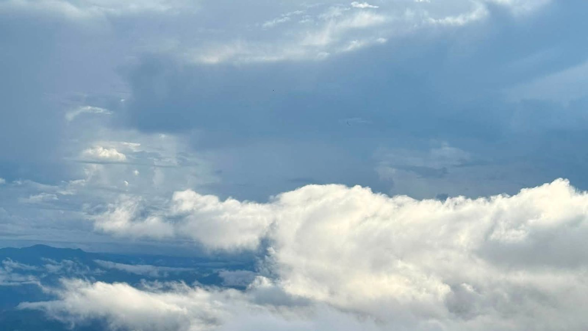

← Về trang chủ · Khám phá Tà Xùa

Ở độ cao của Tà Xùa, những ngày thuận lợi hơi nước từ thung lũng dâng lên thành lớp mây dày phủ kín dưới chân núi. Đứng trên sống núi vào sáng sớm, bạn nhìn xuống thấy mây trải ra như mặt biển, đỉnh núi nhô lên như những hòn đảo. Người ta gọi đó là biển mây, và việc đi tìm nó là "săn mây".
Từ khoảng tháng 10 đến tháng 4 năm sau là mùa mây dày và dễ gặp biển mây nhất. Mây vẫn phụ thuộc thời tiết từng ngày: có sáng mây phủ kín, có sáng trời quang hoặc mưa. Vì vậy nên ở lại ít nhất 1 đêm, nếu có thể thì 2 đêm để có thêm một cơ hội.
Hãy có mặt ở điểm ngắm trước khi mặt trời mọc để kịp thấy mây đổi màu từ xám sang hồng và vàng. Tour Săn Mây Bình Minh của Nhà của An xuất phát lúc 4:30 sáng, có hướng dẫn viên dẫn đường. Sáng sớm trời lạnh nên hãy mặc ấm trước khi ra khỏi phòng.
Sống núi uốn lượn dài, nhìn ra các dãy núi, thung lũng và biển mây. Đây là điểm nổi tiếng nhất Tà Xùa, hợp với người muốn đi bộ và chụp ảnh.
Nơi ngắm bình minh, nhìn thấy nhiều lớp núi nối nhau. Có quán cà phê để ngồi ngắm khi trời còn lạnh.
Một cây táo mèo đứng lẻ loi giữa đồi, được nhiều người tìm đến chụp ảnh.
Hai khối đá nhô ra vách núi, hình dáng giống đầu rùa và cá heo đang vươn lên giữa biển mây.
Khi mây đã tan, bạn có thể đi dạo giữa những gốc chè hàng trăm năm tuổi, khu rừng phủ rêu xanh hoặc triền thảo nguyên để nghỉ ngơi và chụp ảnh.
Không ai đảm bảo được vì mây phụ thuộc thời tiết từng ngày. Nhắn nhà trước tối hôm trước, nhà sẽ cho bạn biết tình hình để quyết định có dậy sớm hay không.
Nếu chưa quen đường, đi theo tour có hướng dẫn viên sẽ an toàn và đỡ mất thời gian tìm đường.